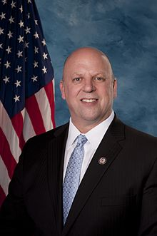

State Congressional Representative Scott DesJarlais

Scott DesJarlaine is an American politician and physician serving as the U.S. Representative for Tennessee's 4th congressional district since 2011. The district stretches across East and Middle Tennessee. He is a member of the Republican Party .
Committee Involvement
- Committee on Agriculture
- Committee of Foreign Affairs
- Committee on Oversight and Government Reform
Selected Legislation
- H.R.1773 - To designate the Mental Health Residential Rehabilitation Treatment Facility Expansion of the Department of Veterans Affairs Alvin C. York Medical Center in Murfreesboro, Tennessee, as the "Sergeant John Toombs Residential Rehabilitation Treatment Facility".
- H.R.84 - PROVIDE Act
- H.R.83 - Protecting Constitutional Rights from Online Platform Censorship Act